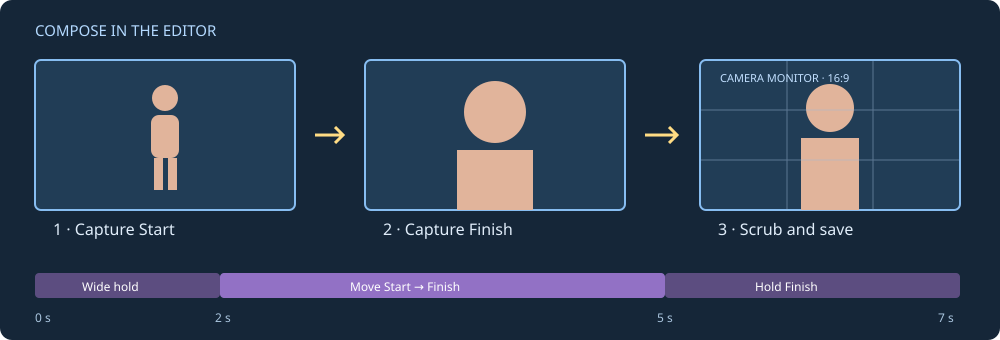
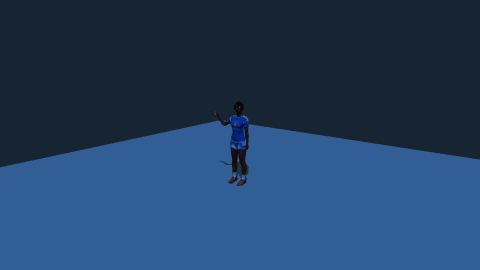
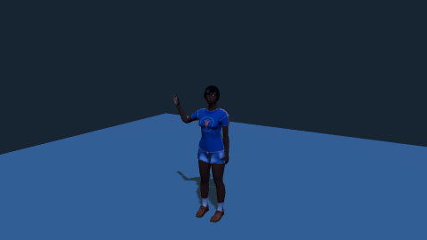
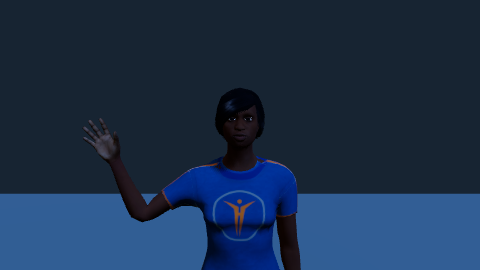
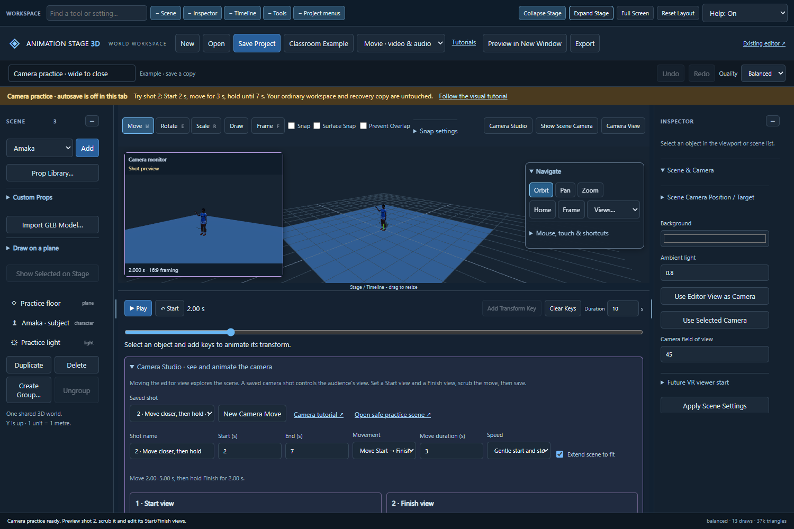

Editor view
Your working viewpoint. Orbit, Pan and Zoom to explore the scene or compose a shot. Moving this view alone does not animate the saved camera.
Short visual guides for Animation Stage 3D. Start with a wide-to-close camera move, inspect every frame and learn how to save the result. These lessons have no audio.
Open camera practice scene ↗Opens a separate practice workspace. Autosave is off in that tab; your normal workspace and browser recovery copy stay untouched. You can save the practice project manually.
Your working viewpoint. Orbit, Pan and Zoom to explore the scene or compose a shot. Moving this view alone does not animate the saved camera.
The audience's framing at the playhead. It shows the saved scene, selected-shot preview or unsaved draft, with a clear label. Choose the same aspect ratio as your export.
A saved purple bar with a time range. A cut holds one view; a move travels from Start to Finish. Moving the camera, changing its target and changing its lens can all be animated.

Schematic illustration. The practice scene shows the actual 3D rendering, character and camera motion.
The subject stays in the same place. Only the camera framing changes. Scrub and step frames to compare the start, middle and finish.
Try the real 3D sequence ↗


Use the Camera Studio button above the stage. Choose an existing shot, or click New Camera Move. New moves start after the last saved shot to avoid overlaps.
Click Edit Start View. Use Orbit / Pan / Zoom in the stage. The monitor follows your editor camera while composing. Click Use Current Editor View on the Start card to capture it.
Click Edit Finish View, move closer or choose another angle, then capture that view on the Finish card. The character's transform is protected while composing the camera.
Set Start and End. Set Move duration shorter than the total shot if you want a hold at the end. Example: Start 2, End 7, Move duration 3 → move 2–5 s, hold 5–7 s. Gentle start and stop is a good first choice.
Drag Scrub this shot, use − Frame / + Frame, or click Play This Shot. Refresh Storyboard shows five camera frames; click one to inspect that moment. Large Camera View enlarges the same framing.
Click Save Camera Move / Save Camera Changes. Find the purple camera bar in the timeline. Click Preview Saved Scene and the main Play button to check transitions between all your shots.

Save the shot, scrub to the frame you want, then click Split at Preview Frame. The existing movement is preserved when split. The right segment opens at that frame: edit its Start view and capture a new framing. Leave Keep split boundary joined checked for this edit to update the preceding Finish when you save, so both sides meet at the same view. Use Undo to restore the unsplit move.
Splits need at least 0.1 seconds on each side. Changing the boundary reauthors the two segments with their easing presets; play through the join to check speed and continuity.
Use 16:9 for landscape, 9:16 for portrait or 1:1 for square. In Movie Export choose the matching resolution ratio and Scene camera. A different ratio shows a different crop.
A monitor marked UNSAVED DRAFT previews changes that are not yet in the project or export. Save first. Editor camera capture is separate from the scene camera used by the movie.
Finish view is an inclusive endpoint inspection. In saved playback, the exact end belongs to the next shot or a camera gap. Preview Saved Scene reveals cuts and returns to the saved/follow camera.
Click its purple bar or saved-shot entry. Use Edit Start / Finish in Camera Studio for visual composition. Drag bars/edges for timing, or enter exact times.
Use Show Playhead, Fit Scene, chosen-character filtering and track-collapse arrows. In/Out marks define a playback preview range, not a crop of your project.
Right-click a bar to split, duplicate or delete when supported. Splits preserve authored motion. Undo restores edits. Linked chair and travel controls keep ownership of their movement keys.
Open Animation Tools → Dope Sheet. Select transform-key diamonds; Shift-click selects more. Shift or Scale Timing to retime them together. Object transform keys are separate from camera-shot bars.
Edit position, rotation or scale values and outgoing interpolation. Rotation is shown in degrees. A key's interpolation applies to the full transform segment; independent Bezier handles are not available yet.
Ghosts show past/future poses of the selected object while paused. Trails show timed world-space samples. Both are editor guides and stay out of your movie, image and model exports.